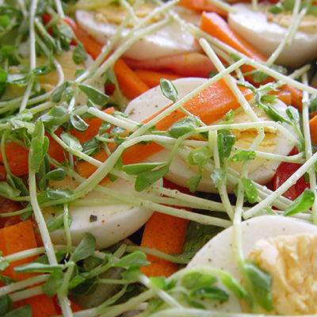

DIETA CARRERA

INDICACIONES
Esta dieta debe seguirse durante solo 3 días.
Cada día se puede llegar a perder 500 gramos.
Beber mucha agua, al menos 8 vasos al día.
Después de terminar esta dieta te aconsejamos que sigas una de mantenimiento para no recuperar el peso perdido.
Si estas tomando medicamentos o tienes alguna enfermedad antes de iniciar cualquier dieta consulta antes con tu medico.
Es muy importante que sigas las indicaciones.